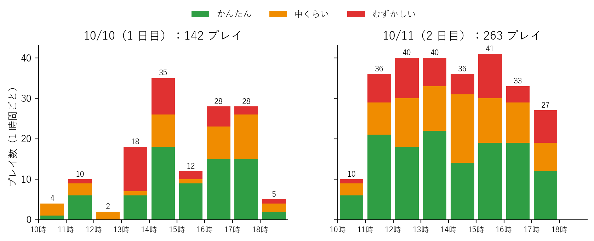
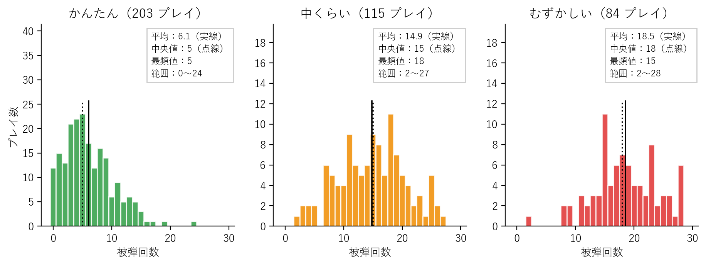
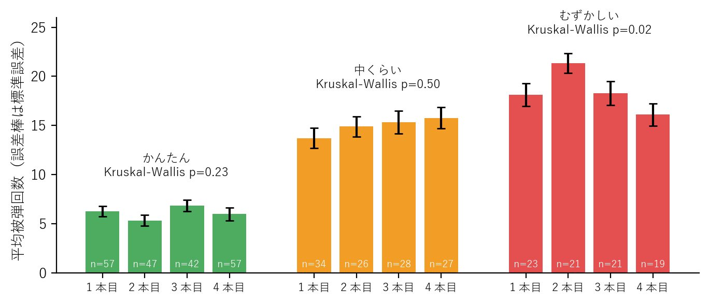
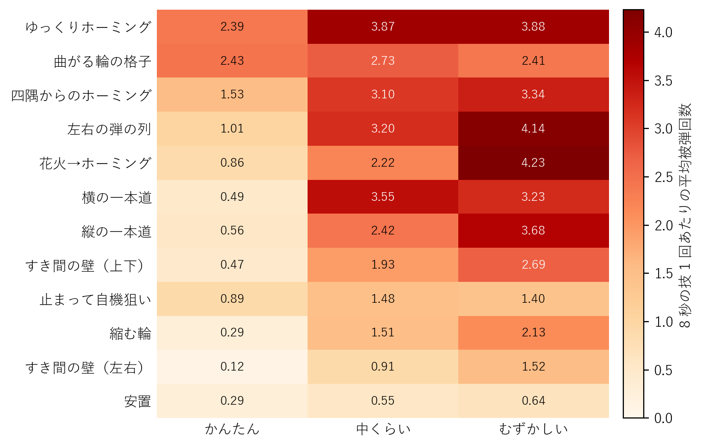
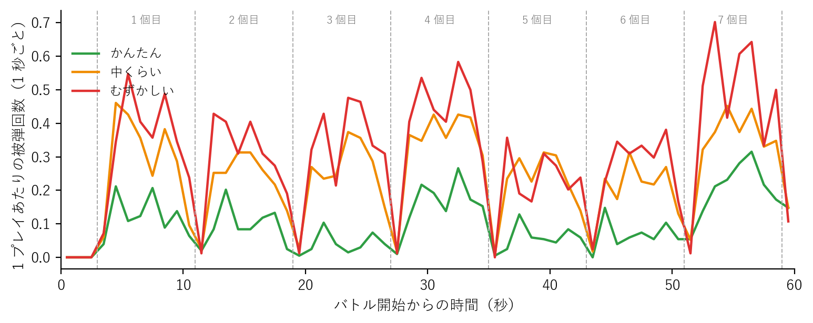
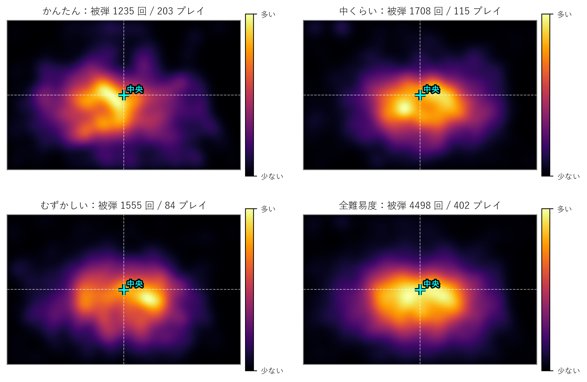
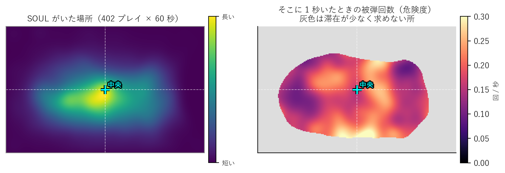
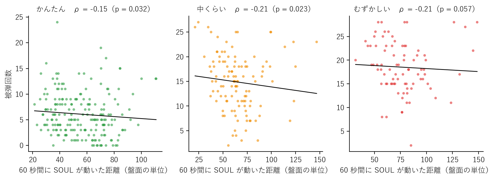
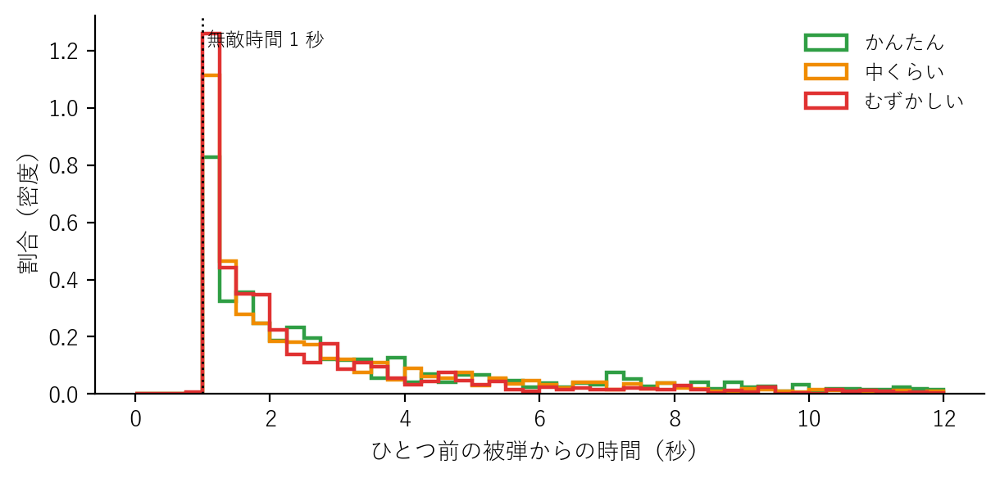

弾幕ゲームは、画面を埋める弾のすき間を縫って自機を動かすゲームである。ふつうはキーボードやコントローラで操作するが、本展示では、来場者が机の上の実物のハートを手で動かし、その位置を 2D LiDAR で測って画面の自機に反映させた。 手で物を動かす操作は誰でもすぐ分かる一方、キーボードほど細かくは動かせない。そのため、難易度の調整がうまくいっていたか、来場者がどう動き、どこで当たっていたかは、展示の前には分からなかった。
ゲームはプレイごとに記録を残すように作ってあり、工大祭の 2 日間で本番のプレイが 405 回集まった。本稿の目的は、この記録から (a) 難易度ごとの被弾回数の分布とその形、(b) 被弾した場所と来場者の動き方、(c) 弾幕の技ごとの難しさを明らかにし、次の展示に向けた改善点を示すことである。
来場者は最初に「かんたん」「中くらい」「むずかしい」の 3 つから難易度を選び、敵キャラクターとの短い会話のあと、60 秒間弾幕を避け続ける。被弾してもゲームは終わらない（デスなし）。 スコアは無く、結果は終了時に表示する被弾回数だけで、プレイ中は被弾回数を出さない。 被弾すると 1 秒間は無敵になり、その間は当たらない。自機の当たり判定は半径 0.06（盤面の単位。盤面は横 5 × 縦 3.2）である。
弾幕は、8 秒の「技」を 3 秒目から 7 個並べた Timeline でできている（3〜59 秒）。技は 12 種類あり（付録 B）、それぞれの技が始まる直前に盤面の弾をすべて消す。 Timeline は難易度ごとに 4 本あり、列に並ぶ人が前のプレイを見て覚えられないよう、毎回ランダムに 1 本を選ぶ（直前と同じものは避ける）。 技の並びは 3 つの難易度で共通で、難易度によって変わるのは弾の速さ・数・発射間隔・すき間の幅だけである。
机の上に約 30 × 20 cm のフィールドを置き、その右端に 2D LiDAR（北陽電機 UST-20LX）を左向きに置いた。来場者は半径 2 cm の円柱（ハート）を手で動かし、ゲームはスキャンした点群に既知の半径の円を当てはめて位置を求める。 求めた位置はそのまま自機の位置になる（速さの上限は無い）。円柱を見失ったときは、自機はその場で止まる。
バトルが終わるたびに、要約（開始時刻・難易度・使った Timeline・被弾回数・デバッグモードか）を 1 行ずつファイルに追記し、詳細を別のファイルに保存した。 詳細には、被弾ごとの時刻・位置・弾の色・撃ち方の名前と、0.1 秒おきの自機の座標（1 プレイ 600 点）が入っている。会場のネット回線に頼らないよう、記録は展示用 PC の中だけに置いた。
記録は全部で 445 回あった。このうち準備・調整中のデバッグモードのプレイ 40 回を除いた本番の 405 回を対象とする。 内訳は、1 日目（10 月 10 日、10:31〜18:49）が 142 回、2 日目（10 月 11 日、10:09〜17:54）が 263 回である。 どのプレイにも詳細の記録がそろっており、同じ ID の重複は無かった。
自機の座標を見ると、60 秒のほとんどで自機が止まっていたプレイが 3 回あった（表 1）。 0.1 秒の移動が 0.005 未満の割合を「静止率」と呼ぶと、この 3 回は 89〜100% で、残りの 402 回（最大 75%）とはっきり分かれる。 円柱を見失って自機が止まっていたか、来場者が円柱を動かさなかったと考えられ、同じ場所で被弾を重ねていた。 本稿ではこの 3 回を除いた 402 回を主な分析に使う。除外の影響は中くらいの平均が 15.2 回から 14.9 回に下がる程度である。
| ID | 難易度 | 被弾回数 | 静止率 | 60 秒の移動距離 |
|---|---|---|---|---|
| 20261010-103442 | 中くらい | 29 | 99.3% | 0.33 |
| 20261011-101235 | 中くらい | 29 | 88.6% | 8.09 |
| 20261011-110009 | 中くらい | 28 | 99.7% | 0.26 |
正規分布かどうかは Shapiro-Wilk 検定で調べた。難易度の差は Kruskal-Wallis 検定と、組ごとの Mann-Whitney の U 検定（Holm 法で補正）で調べ、効果量 r = |Z| / √N を添えた。 前半と後半の比較は Wilcoxon の符号順位検定、動きと被弾回数の関係は Spearman の順位相関係数 ρ で調べた。 分布の形は、正規分布・ポアソン分布・負の二項分布を最尤法で当てはめ、AIC で比べた。有意水準は 5% とする。本稿の分析は探索的なもので、分析どうしの多重比較の補正はしていない。
時間帯ごとのプレイ数を図 1 に示す。2 日目は 1 日目の 1.85 倍のプレイがあった。 続けて遊ばれていたときの、1 回のプレイから次までの間隔は中央値 85 秒（1 時間に約 42 回）で、間隔の 81% が 2 分以内だった。 2 日目の 11〜16 時台は 1 時間に 33〜41 回で、ほぼ列が途切れなかったといえる。
難易度は、かんたん 203 回（50%）、中くらい 118 回（29%）、むずかしい 84 回（21%）が選ばれた。 この割合は 1 日目（51% / 27% / 22%）と 2 日目（50% / 30% / 20%）でほとんど変わらなかった。

難易度ごとの被弾回数の分布を図 2 に、要約を表 2 に示す。 かんたんは平均 6.1 回、中央値 5 回で、0〜9 回に 75% が集まり、右に長く裾を引く（歪度 +0.88）。ノーミスは 12 人（6%）いた。 中くらい（平均 14.9 回）とむずかしい（平均 18.5 回）は、平均と中央値がほぼ一致し、左右対称に近い。

| かんたん | 中くらい | むずかしい | |
|---|---|---|---|
| プレイ数 | 203 | 115 | 84 |
| 平均（標準偏差） | 6.1（4.2） | 14.9（5.7） | 18.5（5.4） |
| 中央値［四分位範囲］ | 5［3–9］ | 15［11–19］ | 18［15–23］ |
| 最頻値（人数） | 5（23） | 18（11） | 15（11） |
| 最少〜最多 | 0〜24 | 2〜27 | 2〜28 |
| ノーミス | 12 人 | 0 人 | 0 人 |
| 歪度 / 尖度 | +0.88 / +1.00 | −0.04 / −0.56 | −0.20 / −0.10 |
| Shapiro-Wilk p | < 0.001 | 0.30 | 0.15 |
| 分散比 | 2.92 | 2.22 | 1.60 |
| AIC 正規 / ポアソン / 負の二項 | 1163 / 1294 / 1125 | 731 / 789 / 738 | 526 / 542 / 532 |
Shapiro-Wilk 検定では、かんたんだけが正規分布から有意に外れた（p < 0.001）。中くらい（p = 0.30）とむずかしい（p = 0.15）は正規分布と矛盾しない。 分布を当てはめると、かんたんは負の二項分布（形のパラメータ k = 2.8）が最もよく、中くらいとむずかしいは正規分布が最もよかった。 どの難易度も分散が平均を上回り（分散比 1.6〜2.9）、ポアソン分布より散らばりが大きい。
3 つの難易度の被弾回数には有意な差があった（Kruskal-Wallis 検定 p < 0.001）。組ごとの比較を表 3 に示す。 かんたんと中くらいの差（8.8 回、r = 0.64）は大きいが、中くらいとむずかしいの差は 3.7 回（r = 0.30）で、分布もかなり重なる（図 2）。
| 組 | 平均の差 | 補正後の p | 効果量 r |
|---|---|---|---|
| かんたん → 中くらい | +8.8 回 | < 0.001 | 0.64 |
| 中くらい → むずかしい | +3.7 回 | < 0.001 | 0.30 |
| かんたん → むずかしい | +12.4 回 | < 0.001 | 0.72 |
同じ難易度の 4 本の Timeline で被弾回数を比べた（図 3）。かんたん（p = 0.23）と中くらい（p = 0.50）では差が無かった。 むずかしいでは 2 本目（平均 21.3 回）と 4 本目（16.1 回）の間に差が見られた（p = 0.018）が、3 つの難易度で検定を繰り返したことを考えると（Bonferroni 補正で p = 0.054）、はっきりした差とまではいえない。 ランダムに選ぶ Timeline による運の差は、おおむね小さかった。

8 秒の技 1 回あたりの平均被弾回数を図 4 に示す。全難易度を通して最も被弾が多かったのは「ゆっくりホーミング」（3.1 回）、最も少なかったのは「安置」（0.4 回）だった。 難易度による増え方は技によって大きく違った。 「花火→ホーミング」（0.86 → 2.22 → 4.23 回）や「左右の弾の列」（1.01 → 3.20 → 4.14 回）は、難易度とともにはっきり増えた。 一方、「曲がる輪の格子」（2.43 → 2.73 → 2.41 回）と「止まって自機狙い」（0.89 → 1.48 → 1.40 回）は難易度でほとんど変わらず、 「横の一本道」（3.55 → 3.23 回）と「ゆっくりホーミング」（3.87 → 3.88 回）は、中くらいとむずかしいで同じくらいだった。

バトル開始からの時刻ごとの被弾を図 5 に示す。被弾は技ごとに山を作り、技の切り替わり（弾を消す瞬間）でほぼ 0 に落ちる。 前半（3〜31 秒）と後半（31〜59 秒）を比べると、かんたんでは後半のほうが多かった（2.6 回 → 3.5 回、p < 0.001）が、中くらい（p = 0.24）とむずかしい（p = 0.71）では差が無かった。 ただし、かんたんで被弾が多い「曲がる輪の格子」と「ゆっくりホーミング」は、4 本のうち 2 本で最後（7 個目）に置かれている。 そこで、技ごとの平均を差し引いた残りを、技が何個目に出たかと比べた。かんたんでは後ろの技ほどわずかに被弾が増えていた（ρ = 0.07、p = 0.009）が、その差は前半と後半の差 0.9 回のうち 0.3 回ほどで、残りは技の並びで説明できる。 中くらい（p = 0.82）とむずかしい（p = 0.37）では、何個目に出たかによる差は無かった。 7 個目（51〜59 秒）は、むずかしいで最も被弾が多い時間帯でもあった。

被弾した位置のヒートマップを図 6 に示す。どの難易度でも被弾は盤面の中央付近に集まり、盤面を縦横 3 つずつに分けると、全体の 42% が真ん中のマス、64% が中段に入った（表 4）。上段は 8% しかなかった。 かんたんは中央の左上、むずかしいは中央の右にやや寄っていた。

ただし、中央に被弾が多いのは、来場者が中央に長くいたためかもしれない。そこで、自機がいた場所（滞在）と、滞在 1 秒あたりの被弾（危険度）を求めた（図 7）。 滞在も中央に集中しており（真ん中のマスに 40%、表 4）、被弾の分布とよく似ている。 中央からの距離ごとに見ると、危険度は毎秒 0.17〜0.21 回でほぼ一定だった（表 5）。中央が特に危険だったのではなく、来場者が中央にいたから中央で当たっていたといえる。 危険度の地図には、盤面の下の縁と中央の上にやや高い所があるが、どちらも滞在の少ない所である。

| 左 | 中 | 右 | |
|---|---|---|---|
| 上段 | 1.9 2.1 | 4.9 4.3 | 1.3 1.5 |
| 中段 | 11.6 15.2 | 42.3 39.7 | 9.8 12.2 |
| 下段 | 5.3 5.4 | 17.5 14.1 | 5.3 5.5 |
| 中央からの距離 | 被弾 | 滞在 | 危険度（回/秒） |
|---|---|---|---|
| 0〜0.5 | 20.3% | 20.1% | 0.19 |
| 0.5〜1.0 | 38.7% | 35.1% | 0.21 |
| 1.0〜1.5 | 26.3% | 29.0% | 0.17 |
| 1.5 以上 | 14.7% | 15.8% | 0.17 |
自機の動きの要約を表 6 に、移動距離と被弾回数の関係を図 8 に示す。難易度が上がるほど来場者はよく動き、平均の速さはかんたんの毎秒 0.93 から、むずかしいの毎秒 1.28（盤面の単位）に上がった。 同じ難易度の中では、よく動いた人ほど被弾がやや少なかった（ρ = −0.15〜−0.21）が、関係は弱い。 それよりはっきりしていたのは静止率で、止まっている時間が長い人ほど被弾が多かった（ρ = +0.33〜+0.44、いずれも p < 0.001）。 中央からの平均距離は、かんたんでだけ被弾と正の相関があった（ρ = +0.40）。
| かんたん | 中くらい | むずかしい | |
|---|---|---|---|
| 60 秒の移動距離（中央値） | 55 | 63 | 77 |
| 平均の速さ（毎秒） | 0.93 | 1.09 | 1.28 |
| 静止率（中央値） | 29% | 25% | 19% |
| ρ（移動距離） | −0.15（p = 0.03） | −0.21（p = 0.02） | −0.21（p = 0.06） |
| ρ（静止率） | +0.33（p < 0.001） | +0.36（p < 0.001） | +0.44（p < 0.001） |
| ρ（中央からの平均距離） | +0.40（p < 0.001） | +0.04（p = 0.70） | 0.00（p = 0.97） |

同じプレイの中で、ひとつ前の被弾から次の被弾までの時間を図 9 に示す。無敵時間の 1 秒より短い間隔は無く、記録と仕様は一致している。 目立つのは、無敵が切れた直後（1.00〜1.25 秒）の山である。この範囲に入る被弾は、かんたんで 17%、中くらいで 26%、むずかしいで 31% あった。 1 秒の無敵の間に弾の中から抜け出せず、無敵が切れた瞬間にまた当たる「連続被弾」が、難しい難易度ほど多い。

1 回のプレイでは数百発の弾が飛んできて、1 発ごとに「当たる・当たらない」が小さな確率で決まる。被弾回数はその合計なので、中心極限定理により、平均が大きければ正規分布に近づく。 ただし、まれな出来事の回数は本来ポアソン分布に従い、0 より小さくなれない。かんたんは平均が 6 回と小さいので、左側が 0 で切れて右にだけ裾が伸び、正規分布から外れた。 中くらいとむずかしいは平均が 15〜18 回と大きく、0 から離れたので正規分布に近くなった。
また、どの難易度でも分散が平均を上回っていた。全員が同じうまさならポアソン分布の散らばり（分散 = 平均）に収まるはずなので、来場者のうまさの違いが散らばりを広げたと考えられる。 うまさに個人差のある回数のデータは、負の二項分布でよく表される。かんたんで負の二項分布が最もよく当てはまったのはこのためである。 一方、むずかしいは 28 回あたりで頭打ちになり、負の二項分布より正規分布のほうが当てはまった。1 秒の無敵と、弾の少ない技（安置など）があるため、被弾できる回数には上限がある。上が切れると散らばりが抑えられる。 つまり、データを多く集めれば正規分布になるのではない。多くの小さな出来事の合計で、かつ 0 や上限から十分離れているときに、正規分布に近くなる。
中くらいとむずかしいの差が小さかった（3.7 回）原因は、図 4 から読み取れる。弾の速さや数を増やしても被弾が増えない技があった。 「曲がる輪の格子」や「止まって自機狙い」は 3 つの難易度でほぼ同じで、「ゆっくりホーミング」と「横の一本道」は中くらいで既に頭打ちだった。 ホーミングは弾の速さを上げても、もともと逃げ切れない人が当たる回数はあまり変わらない。また、一本道はすき間に入れるかどうかでほぼ決まるので、中くらいのすき間の幅で既に難しかったと考えられる。 次の展示でむずかしいの差を広げるなら、難易度で効いている技（花火→ホーミング、左右の弾の列、縦の一本道）をむずかしいで多く使うか、効いていない技のむずかしい版の中身を変えるのがよい。
かんたんは 75% が 9 回以下で、ノーミスも 6% いた。「誰でも最後まで遊べる」という目的には合っていたといえる。来場者の半数がかんたんを選んでおり、この難易度の体験が展示の印象を大きく左右していた。
来場者は自機のスタート位置である中央付近に長くいて、上段にはほとんど行かなかった。危険度が場所によらずほぼ一定だったことから、弾幕は盤面の特定の場所を狙い撃ちにはしておらず、被弾の位置の偏りは来場者の動き方を映しているといえる。 上段に行かなかった理由として、敵キャラクターの立ち絵が上にあること、来場者から遠い側は手を伸ばしにくいことなどが考えられるが、今回の記録からは区別できない。
止まっている人ほど被弾が多かったのは、縮む輪やホーミングのように、同じ場所に居続けると当たる技が多いためと考えられる。 また、むずかしいでは被弾の 31% が無敵が切れた直後に起きていた。無敵の 1 秒は、手で物を動かして弾の中から抜け出すには短い可能性がある。被弾回数の頭打ちや連続被弾をやわらげるなら、無敵時間を延ばすことも考えられる。
工大祭 2026 で展示した、実物のハートで弾幕を避けるゲームの本番 405 回の記録を分析した。 被弾回数は難易度とともに増え（平均 6.1 / 14.9 / 18.5 回）、かんたんは右に裾を引く分布、中くらいとむずかしいは正規分布に近い分布だった。 被弾は盤面の中央に集中したが、これは来場者が中央にいたためで、場所ごとの危険度はほぼ一定だった。 技ごとの分析から、難易度で強さが変わらない技が中くらいとむずかしいの差を小さくしていたことが分かった。また、止まっている人ほど被弾が多く、難しい難易度ほど無敵が切れた直後の連続被弾が多かった。 次の展示では、(1) むずかしいで効いていない技の調整、(2) 無敵時間の見直し、(3) 入力源と来場者の区別（初めてか、何回目か）の記録を行いたい。
記録は展示用 PC の %USERPROFILE%\AppData\LocalLow\DefaultCompany\LidarBattle\ にある。
plays.jsonl：1 プレイ 1 行。id（開始時刻から作る）、time、difficulty、timeline、hits、debug。replays/<id>.json：board（盤面の左下の座標・幅・高さ = −2.5, −3.4, 5.0, 3.2）、hitEvents（被弾ごとの t・x・y・bullet・pattern）、pathInterval（0.1 秒）、path（自機の座標 600 点）。
本稿の図と数値は python Tools/Stats/analyze.py で作り直せる（図は Tools/Stats/figs/、数値は Tools/Stats/results.json）。
| 技 | 内容 | 被弾 |
|---|---|---|
| ゆっくりホーミング | 上の隅と左右から、ゆっくり追いかけてくる弾 | 3.09 |
| 曲がる輪の格子 | 左回り・右回りに曲がる輪を重ねて格子にする | 2.52 |
| 四隅からのホーミング | 四隅から順に、一定時間で消える追いかける弾 | 2.39 |
| 左右の弾の列 | 左右から弾の列（壁）が来て、弾のすき間を抜ける | 2.36 |
| 花火→ホーミング | 上の縁で弾けた破片が、少したつと追いかけてくる | 1.96 |
| 横の一本道 | 右から左へ流れる、すき間が上下にうねる道 | 1.87 |
| 縦の一本道 | 上から下へ流れる、すき間が左右にうねる道 | 1.79 |
| すき間の壁（上下） | すき間のある壁が上下から来る | 1.31 |
| 止まって自機狙い | 上下から扇を撃ち、止まってから自機へ撃ち直す | 1.16 |
| 縮む輪 | 自機を囲む大きな輪が縮んでくる。すき間から外へ出る | 1.00 |
| すき間の壁（左右） | すき間のある壁が左右から来る | 0.67 |
| 安置 | 緑の「あんぜん」シートに入ると、外が弾で埋まる | 0.44 |
| 1 個目 3–11 秒 | 2 個目 11–19 秒 | 3 個目 19–27 秒 | 4 個目 27–35 秒 | 5 個目 35–43 秒 | 6 個目 43–51 秒 | 7 個目 51–59 秒 | |
|---|---|---|---|---|---|---|---|
| 1 | すき間の壁（上下） | 四隅からのホーミング | 縦の一本道 | 縮む輪 | 安置 | 止まって自機狙い | 曲がる輪の格子 |
| 2 | 左右の弾の列 | 縮む輪 | 横の一本道 | 花火→ホーミング | 安置 | すき間の壁（左右） | ゆっくりホーミング |
| 3 | 曲がる輪の格子 | 安置 | すき間の壁（左右） | 四隅からのホーミング | 縦の一本道 | 左右の弾の列 | 花火→ホーミング |
| 4 | 止まって自機狙い | すき間の壁（上下） | 安置 | ゆっくりホーミング | 横の一本道 | 縮む輪 | 花火→ホーミング |